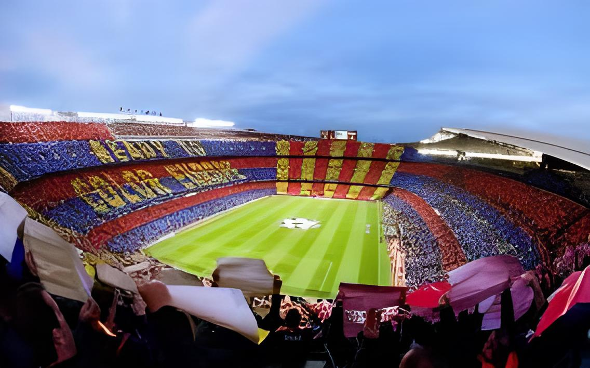

_preview_rev_1.png)
Estadio Camp Nou
O Spotify® Camp Nou que em catalão significa Campo Novo foi um estádio de futebol localizado na cidade de Barcelona, na Catalunha, na Espanha. Um novo estádio está em obras para em 2026 ser inaugurado o novo Spotify Camp Nou. seu nome oficial era Estadi del Fútbol Club Barcelona até 2000/2001, quando uma votação realizada entre os torcedores oficializou a sua denominação popular, Camp Nou. Desde 1998/1999, é um estádio 5 estrelas segundo a União das Federações Europeias de Futebol.